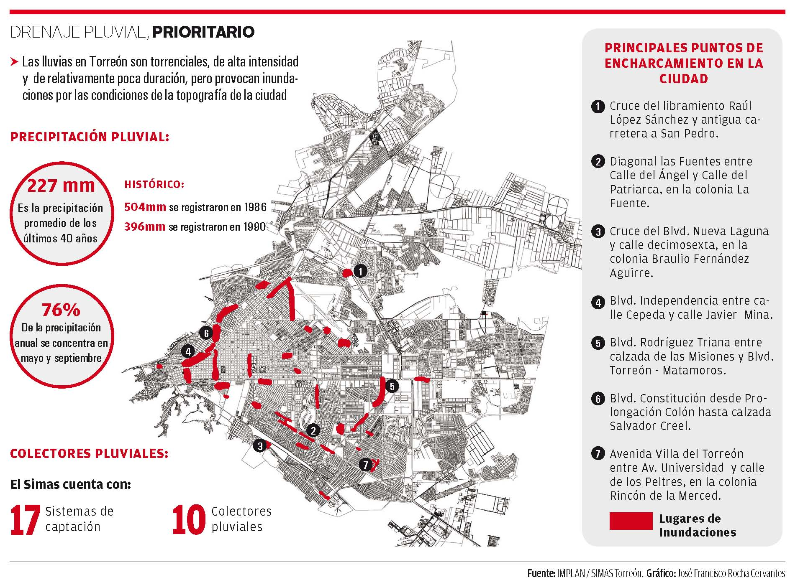

Una de las necesidades para el futuro en materia urbana de Torreón, es contar con un proyecto de aguas pluviales que atienda el problema de los encharcamientos en distintos puntos de la ciudad.
Por esta razón, el comité técnico en esta materia del IMPLAN ha presentado el "Diagnóstico para la implementación del Plan Estratégico de Drenaje Pluvial en Torreón".
El objetivo de este diagnóstico es identificar la problemática del drenaje pluvial y evaluar las posibles propuestas de solución.
De acuerdo con el consejero Javier Ramos, que participó en este estudio...
"Hay una percepción en la ciudadanía lagunera de que resolver el problema pluvial nos va a costar cientos de millones de pesos, después de haber estudiado nosotros el problema pluvial en Torreón, nos dimos cuenta de que las primeras soluciones, que desde luego son soluciones parciales que no resuelven al cien por ciento el problema pluvial, sí son soluciones de bajo costo y de corto plazo".
El empresario del ramo inmobiliario explicó que hay una serie de cárcamos de re bombeo de aguas pluviales...
"Nosotros tenemos detectados diez cárcamos rebombeo y 17 redes pluviales a donde descargan esos cárcamos. Estos están en mal estado porque nadie les da mantenimiento".
"Si encontramos a alguien que se haga responsable de este mantenimiento, estimamos que con una inversión muy pequeña, probablemente unos 4 millones de pesos, podemos echar a andar de manera parcial esos cárcamos que están en varios de los puntos más conflictivos donde hay mayores encharcamientos", abundó el consejero.
La topografía plana de la ciudad es la causa básica de los encharcamientos que ocurren, cuando las lluvias son excesivas o de alta intensidad, aunado a la limitada existencia de drenes naturales o construidos para el escurrimiento pluvial, explicó.
De acuerdo con el diagnóstico elaborado por el IMPLAN, los siete principales puntos viales de encharcamiento en Torreón son:
- El cruce del libramiento Raúl López Sánchez y antigua carretera a San Pedro.
- Diagonal las Fuentes entre Calle del Ángel y Calle del Patriarca, en la colonia La Fuente.
- El cruce del bulevar Nueva Laguna y calle decimosexta, en la colonia Braulio Fernández Aguirre.
- El buelvar Independencia entre calle Cepeda y calle Javier Mina.
- El bulevar Rodríguez Triana entre calzada de las Misiones y bulevar Torreón–Matamoros.
- El bulevar Constitución desde Prolongación Colón hasta calzada Salvador Creel.
- La avenida Villa del Torreón entre avenida Universidad y calle de los Peltres, en la colonia Rincón de la Merced.
Ante esta problemática, Javier Ramos expresa que en Torreón no existe un sistema integral de aguas pluviales.
“Lo que hay está en mal estado y la primera propuesta que tenemos es arreglar lo que existe. Si esto resuelve el problema de encharcamiento en el Campesino esquina con periférico, qué bueno, porque es el punto más conflictivo que hay en la ciudad".
"Si en Rodríguez Triana hacemos que funcione el cárcamo que bombee hacia el colector de aguas pluviales que descarga en La Vega del Caracol, perfecto. Ese es el primer paso que queremos dar".
Es una solución parcial. La propuesta no es que nos quedemos ahí, la propuesta es que se haga un plan integral con soluciones a corto, mediano y largo plazo. Eso tiene muchas aristas y estamos hablando de inversiones que van mucho más allá”, manifestó el consejero.
El Objetivo del Plan Estratégico de Drenaje Pluvial, un proyecto que emana del Plan Estratégico Metropolitano para Torreón, es:
“Administrar de manera integral y eficiente los escurrimientos pluviales que se generan en la ciudad de Torreón, buscando el mayor aprovechamiento del agua para fines de riego de áreas verdes o forestadas y para la posible recarga del acuífero, al mismo tiempo de prevenir y mitigar los efectos nocivos de las lluvias extraordinarias que periódicamente afectan la ciudad”.
Para ello se requiere: un inventario de redes pluviales existentes, en funcionamiento o desactivadas, indicando equipamiento, capacidad, tipo y longitud de redes, puntos de captación y puntos de descarga, así como el presupuesto para su puesta en marcha y operación eficiente.
Además se proyecta la construcción y rehabilitación de canales de desagüe pluvial e incorporación de canales a cargo de CONAGUA al sistema de desagüe pluvial, logrando con ello la solución integral de los siete puntos citadinos más afectados por los encharcamientos.
De acuerdo con este estudio, es el Sistema Municipal de Aguas y Saneamiento de Torreón (SIMAS), la dependencia responsable de la planeación, ejecución, operación, mantenimiento y control del sistema integral de aguas pluviales.
Infografía
